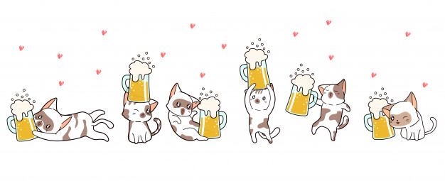

Os dados apresentados no gráfico são coletados por um sistema embarcado ESP32, instalado em uma geladeira fermentadora e conectado à internet via Wi-Fi. As variáveis de processo, como temperaturas, setpoint e estado dos atuadores, são enviadas periodicamente para a nuvem, onde ficam armazenadas no Firebase (Realtime Database).
O fluxo de dados ocorre de forma bidirecional: o dispositivo realiza as leituras e envia os dados ao Firebase em intervalos definidos, enquanto a aplicação web, hospedada no GitHub, acessa essas informações em tempo real para atualizar gráficos e indicadores automaticamente. Quando o usuário altera parâmetros pelo painel, os novos valores são gravados no banco e posteriormente lidos pelo sistema embarcado, que aplica as mudanças no controle da temperatura.